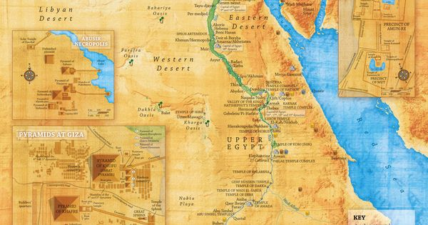

🇪🇬 Ancient Egypt
Time Period: ~3100 BCE – 30 BCE
Location: Along the Nile River, northeastern Africa
Key Highlights:
Government & Society: A theocratic monarchy led by Pharaohs, who were considered divine.
Architecture: Pyramids, temples, and obelisks—built with incredible precision and without modern tools.
Religion: Polytheistic, with gods like Ra (sun), Osiris (afterlife), and Isis (magic).
Achievements:
Hieroglyphic writing system.
Advanced medicine and surgery techniques.
365-day calendar based on solar cycles.
Sophisticated irrigation and agricultural systems.
Legacy: Their engineering and spiritual ideas influenced Greek and Roman cultures,
and the Pyramids remain among the Seven Wonders of the Ancient World.
- Timeline: 3100 BCE - 30 BCE
- Key Features: Pyramids, Hieroglyphics, Pharaohs, Mummification
- Major Cities: Memphis, Thebes